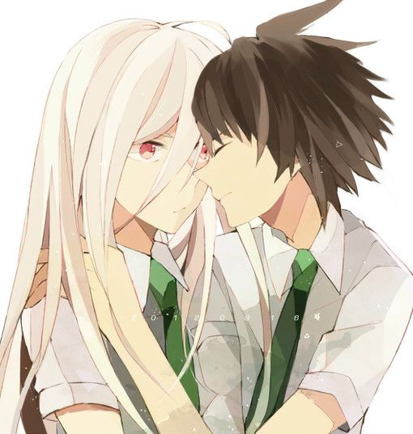

Little angel vs little ace
html5+css3
jQuery
about us
about her
content

this is my summary of html
this is my summary of css
click on the html5 summary
click on the css3 summary
i have some understanding of jquery
some of jquery's use of plug-ins
the understanding of javascript
case of javascript
Feedback
Please include your contact information if you'd like to receive a reply.
Submit